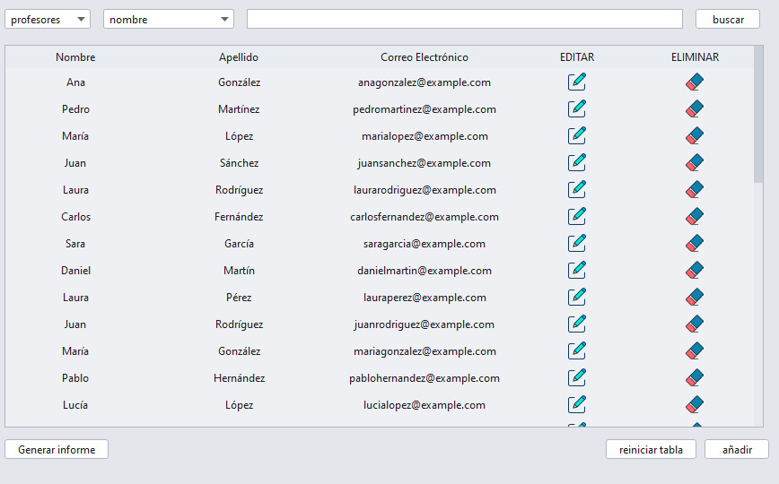
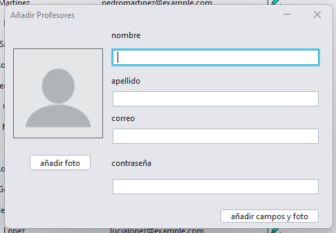
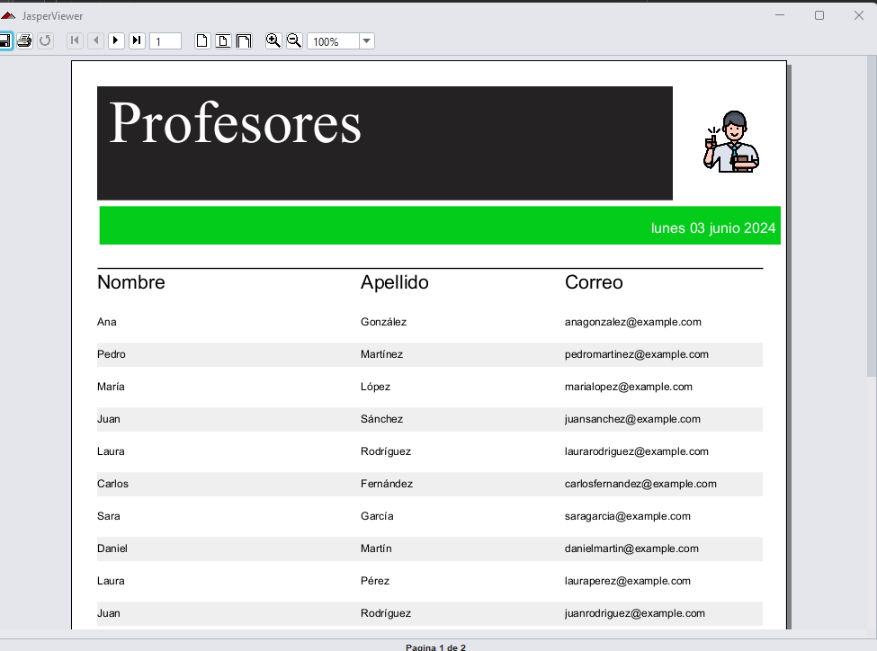

En la sección "Datos" puedes gestionar la información del instituto. Aquí puedes cargar y visualizar diferentes tablas, filtrar datos, añadir nuevos registros, editar y eliminar existentes, y generar informes.
Para cargar una tabla, selecciona la tabla deseada del combobox. Las tablas disponibles son:
Para filtrar datos dentro de una tabla, sigue estos pasos:
Para añadir un nuevo registro a la tabla, haz clic en el botón "Añadir". Se abrirá un panel donde puedes ingresar los datos del nuevo registro. En los casos de alumnos y profesores, también puedes subir una imagen.
Para generar un informe de los datos actuales en la tabla, haz clic en el botón "Generar Informe". Esto generará un informe con todos los valores visibles en la tabla.
En cada fila de la tabla, encontrarás dos columnas al final con las opciones "Editar" y "Eliminar":